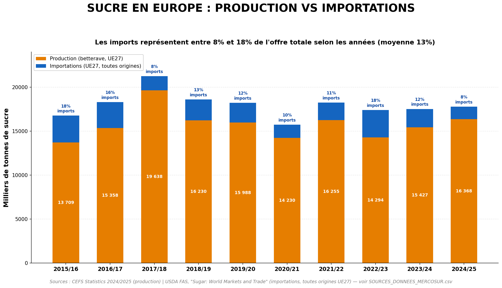
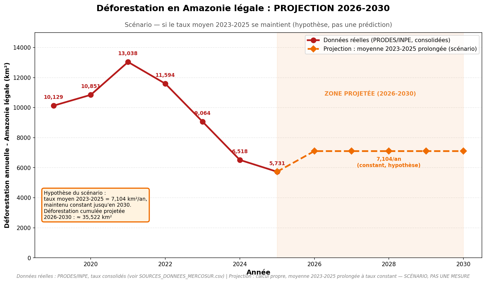

Accord UE-Mercosur et Deforestation
Analyse des liens entre commerce et environnement
Donnees 2020-2025
Contexte
L'accord UE-Mercosur, finalise en decembre 2024, est le plus grand accord commercial jamais negocie par l'Union europeenne. Il concerne le Bresil, l'Argentine, le Paraguay et l'Uruguay - des pays qui abritent l'Amazonie et le Gran Chaco, deux des ecosystemes les plus menaces au monde.
Deforestation vs Exports de soja
Ce graphique montre l'evolution parallele de la deforestation amazonienne et des exports de soja bresiliens entre 2019 et 2025.

Sources : PRODES/INPE (deforestation), USDA FAS (exports soja)
Impact de l'accord UE-Mercosur pour le bœuf
L'accord cree un nouveau quota de 99 000 tonnes de bœuf a droit reduit. Mais une bonne partie de ce volume remplace du commerce qui existe deja hors-quota, a droits pleins : le commerce reellement nouveau est nettement plus faible que le chiffre du quota affiche.

Sources : Commission Europeenne (quota), CAP Reform / DG TAXUD (imports actuels et estimation du volume net)
| Bœuf (t équiv. carcasse) | Imports actuels (2024) | Quota nominal accord | Net réellement nouveau (estimé) |
|---|---|---|---|
| Frais/réfrigéré | 111 058 t | +54 450 t | +9 400 t |
| Congelé | 58 000 t | +44 550 t | +40 550 t |
| Total | 169 058 t | +99 000 t | +49 950 t |
Sucre : production et importations en Europe
L'accord UE-Mercosur ajoute un quota de 190 000 tonnes de sucre (180 000 t existantes reconduites + 10 000 t nouvelles pour le Paraguay). Pour situer l'ampleur de ce chiffre, voici la production europeenne de sucre de betterave comparee aux importations totales (toutes origines, pas seulement Mercosur).

Sources : CEFS Statistics 2024/2025 (production) ; USDA FAS, "Sugar: World Markets and Trade" (importations)
Projection de la deforestation (2026-2030)
Le taux annuel de deforestation en Amazonie legale a baisse chaque annee depuis le pic de 2021. Ce graphique projette un seul scenario : si la moyenne du taux observe sur 2023-2025 se maintient telle quelle jusqu'en 2030.

Donnees reelles 2019-2025 (PRODES/INPE, taux consolides) et projection 2026-2030 (scenario, pas une prediction)
Empreinte deforestation par produit
Combien de metres carres de foret sont detruits pour produire 1 kg de chaque produit importe ?

Source : Trase Insights (Stockholm Environment Institute), "Brazilian beef exports and deforestation" (14/10/2025)
Donnees cles Mercosur
| Pays | Perte foret 2022 (Mha) | Production soja 2024 (Mt) | Production boeuf 2024 (Mt) |
|---|---|---|---|
| Bresil | 3.31 | 154 | 11.85 |
| Argentine | 0.23 | 51 | 3.3 |
| Paraguay | 0.22 | 10.3 | 0.59 |
| Uruguay | - | - | 0.6 |
Sources
- Global Forest Watch - Donnees deforestation
- PRODES/INPE - Deforestation Amazonie officielle
- MapBiomas Chaco - Gran Chaco
- Eurostat - Commerce UE-Mercosur
- USDA FAS - Production agricole
- WWF-Brazil - Rapports deforestation